Installazione¶
QGIS è un software multipiattaforma e facilmente installabile:
Windows¶
Andare sul sito e a seconda della versione:
- standalone (installa QGIS e programmi necessari, ma non si può personalizzare). Scelta più rapida ma meno completa
- OSGEO4W permette di personalizzare l’installazione e scaricare anche la versione di sviluppo. In questo modo si possono anche scaricare software di terze parti (SAGA, GRASS, OTB...) e configurali molto semplicemente. Scelta consigliata se si desidera sfruttare QGIS al massimo
 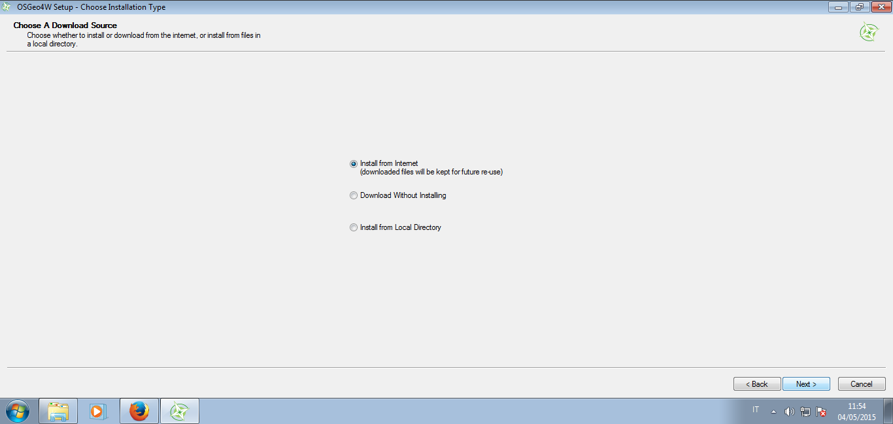
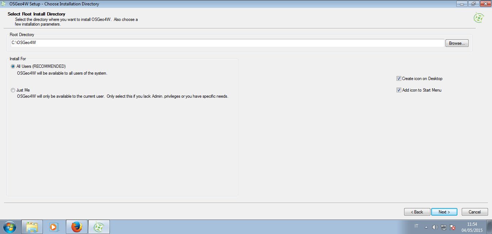
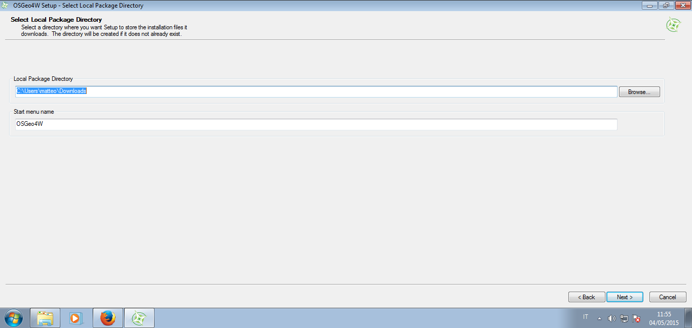
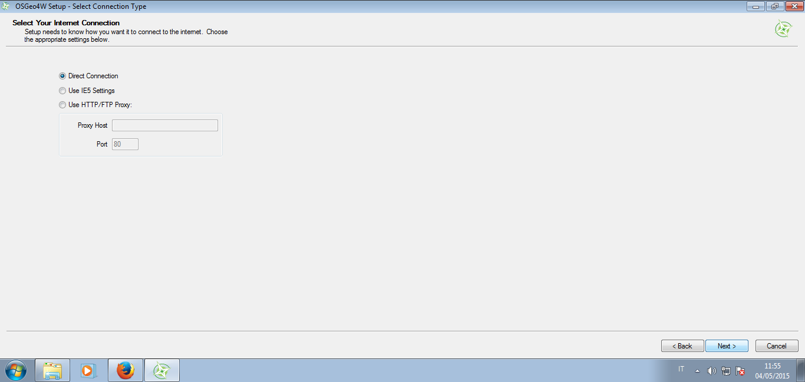
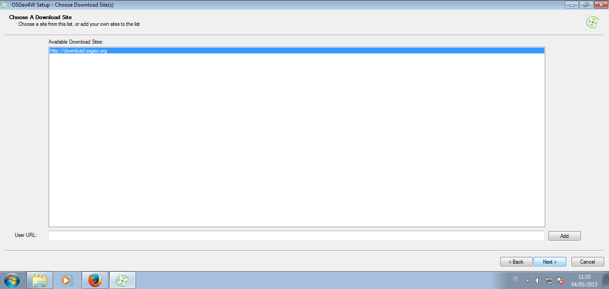
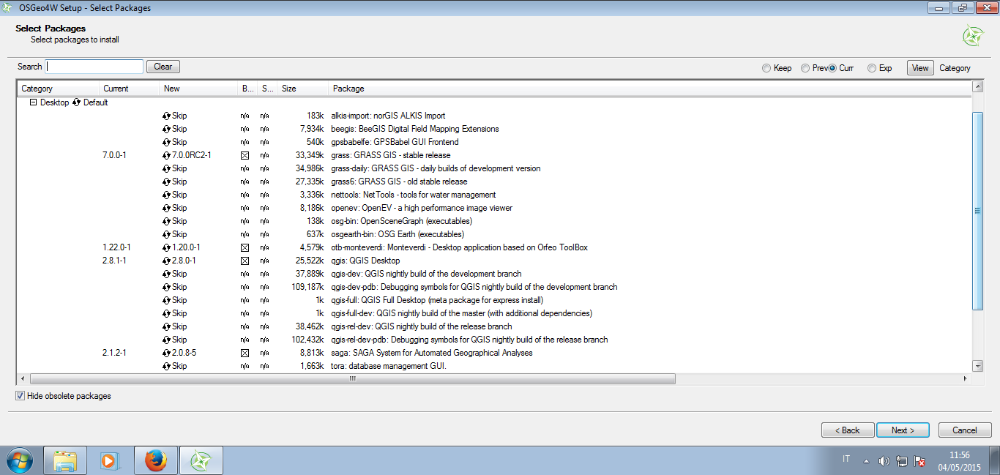
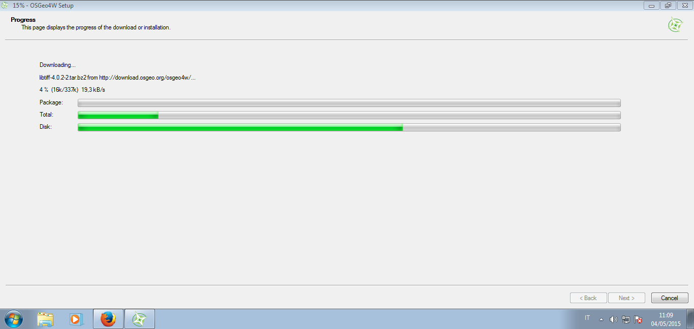
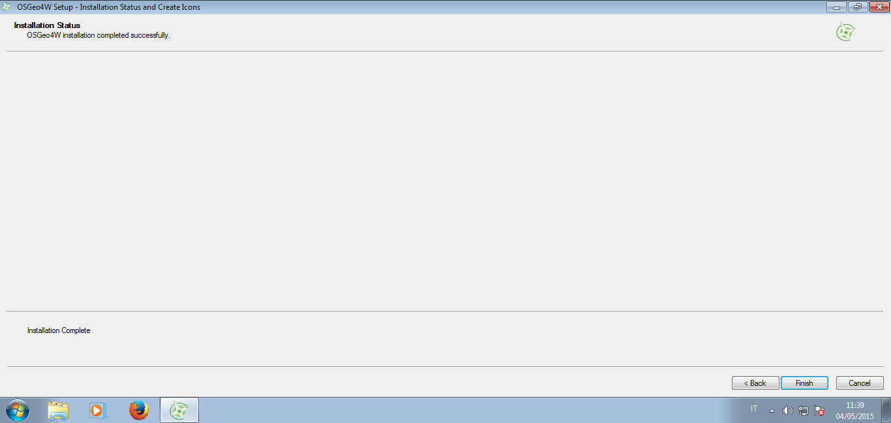
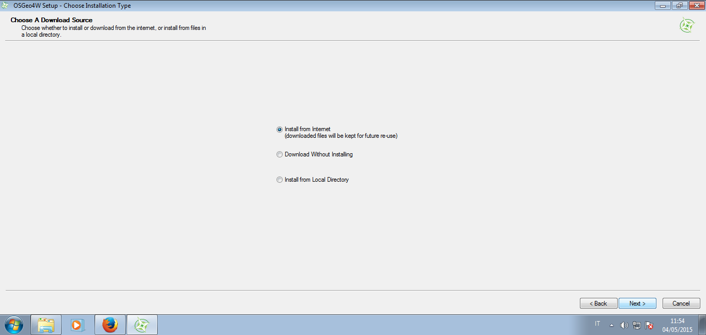
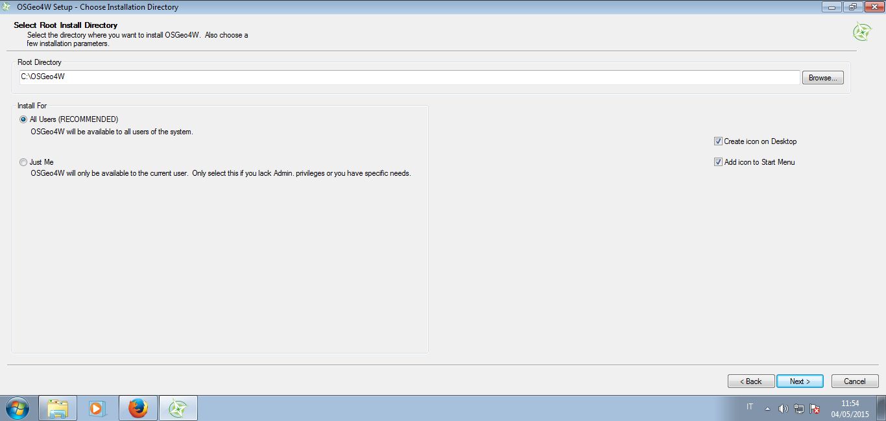
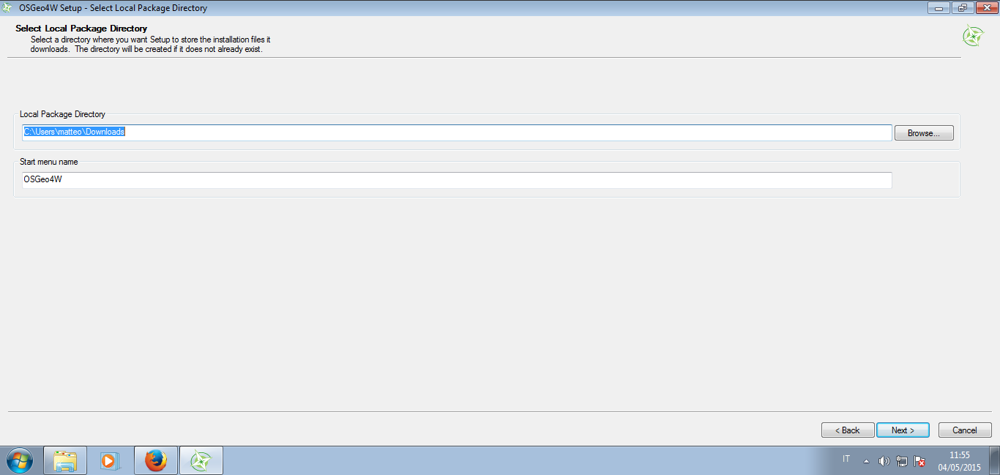
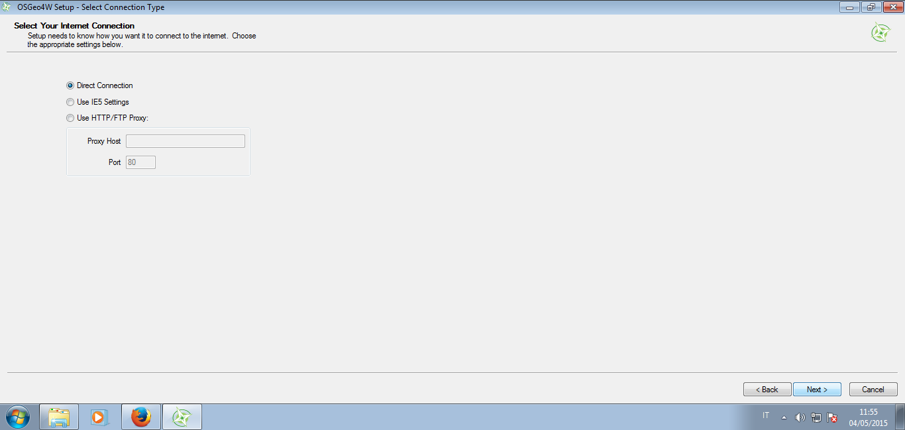
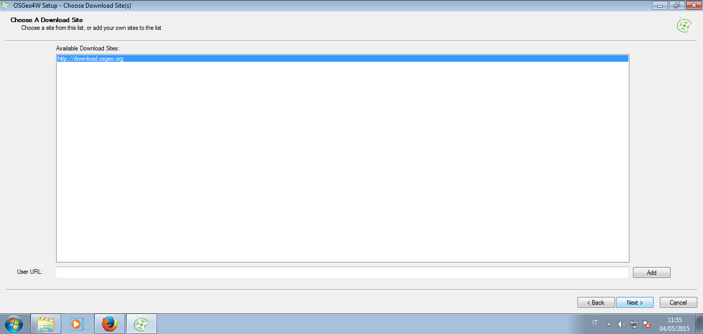
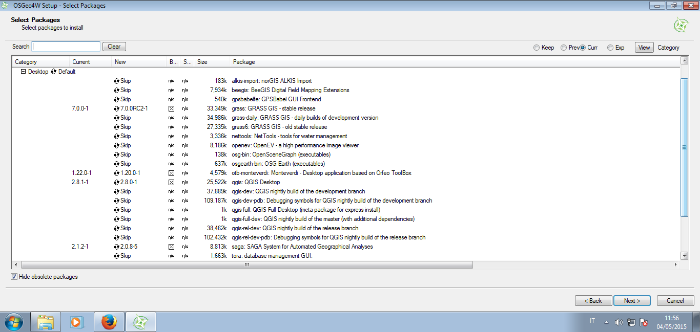
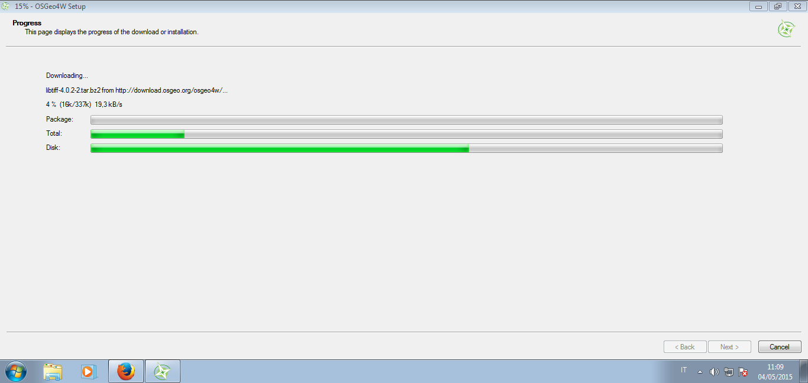
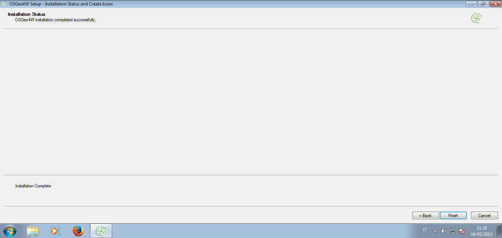
Mac¶
L’installazione per utenti Mac richiede un po’ di pazienza. Andare sul sito e scaricare QGIS. All’avvio dell’installazione, se dovessero mancare delle dipendenze compariranno dei messaggi di avvertenza. In questo caso, sempre dalla stessa pagina è necessario cercare i pacchetti mancanti e installarli volta per volta finchè non compaiono più messaggi di errore. Molto probabilmente la libreria che mancherà è GDAL.